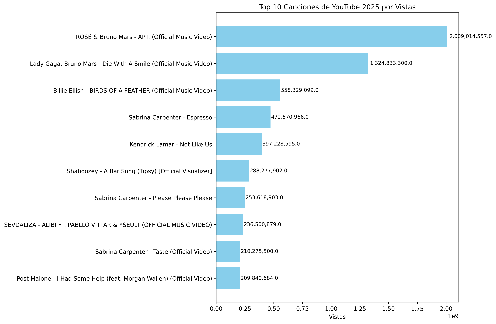

| Posición | Canción | Vistas |
|---|---|---|
| 1 | ROSÉ & Bruno Mars - APT. (Official Music Video) | 2,009,014,557.0 |
| 2 | Lady Gaga, Bruno Mars - Die With A Smile (Official Music Video) | 1,324,833,300.0 |
| 3 | Billie Eilish - BIRDS OF A FEATHER (Official Music Video) | 558,329,099.0 |
| 4 | Sabrina Carpenter - Espresso | 472,570,966.0 |
| 5 | Kendrick Lamar - Not Like Us | 397,228,595.0 |
| 6 | Shaboozey - A Bar Song (Tipsy) [Official Visualizer] | 288,277,902.0 |
| 7 | Sabrina Carpenter - Please Please Please | 253,618,903.0 |
| 8 | SEVDALIZA - ALIBI FT. PABLLO VITTAR & YSEULT (OFFICIAL MUSIC VIDEO) | 236,500,879.0 |
| 9 | Sabrina Carpenter - Taste (Official Video) | 210,275,500.0 |
| 10 | Post Malone - I Had Some Help (feat. Morgan Wallen) (Official Video) | 209,840,684.0 |
Última actualización: 2025-10-24 00:30:36